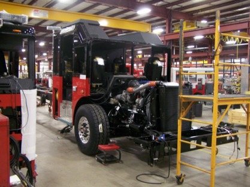

491 is our newest ladder apparatus: a Seagrave truck equipped with a 100-ft ladder, and usually our go-to apparatus. Here is how it came together in 2009.

May 2009

June – July 2009
Making very fast progress. Our ladder is mounted on an old fire truck and tested before it gets mounted on 491. Lots of shelf space. The back of the truck is now upright, and the body has been mounted. It’s been a very busy month when you compare the start of July to the end.
August
Things are getting “put together.” Testing the ladder — notice the pictures are taken from a safe distance. Experience counts! Almost ready to roll.